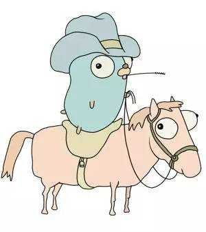

Goroutine+Channel+WaitGroup使用

介绍
goroutine
golang语言中最有特色之一的东东就是这个goroutine了，很多时候问起别人为什么golang的好用，golang的网络性能可以那么好，一般都会多多少少想到goroutine，提起goroutine。在linux中内核的调度最小单位是就是thread，同一个进程中的多个thread线程就对应内核中的多个thread实体。所以thread是内核级的，而gorountine是一个不同于thread的概念，gorountine是一个用户态，另外一种说法也就携程，是用户态的一种调度粒度，每个gorountine也有自己的栈空间，而且是在用户内存中的。golang中实现了对用户态的一种代码片段的高效调度执行，就目前来看是非常有效的，而且给用户编程带来了极大的方便。

 gRPC是一个高性能、通用的开源RPC框架，基于ProtoBuf(Protocol Buffers)序列化协议开发，且支持众多开发语言。
gRPC是一个高性能、通用的开源RPC框架，基于ProtoBuf(Protocol Buffers)序列化协议开发，且支持众多开发语言。 去年在做golangserver的时候，内部比较头疼的就是在线服务发布的时候，大量用户的请求在发布时候会被重连，在那时候也想了n多的方法，最后还是落在一个github上的项目，facebook的一个golang项目grace，那时候简单研究测试了一下可以就直接在内部使用了起来，这段时间突然想起来，又想仔细研究一下这个项目了。
去年在做golangserver的时候，内部比较头疼的就是在线服务发布的时候，大量用户的请求在发布时候会被重连，在那时候也想了n多的方法，最后还是落在一个github上的项目，facebook的一个golang项目grace，那时候简单研究测试了一下可以就直接在内部使用了起来，这段时间突然想起来，又想仔细研究一下这个项目了。